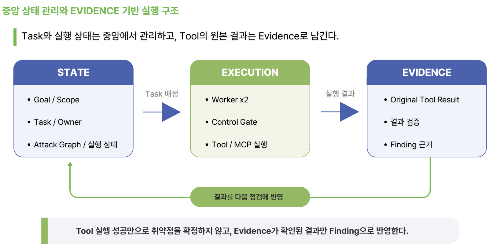

상태 관리와 중단, 재개¶
중앙 상태는 SQLite(schema 3)로 목표와 실행, 작업 소유권, 도구 호출, 자원 사용을 관리한다. 공유 공격 그래프도 같은 DB를 쓰고, Evidence와 Audit, Approval, SDK 체크포인트는 각자 저장소를 유지한다.

세 저장 영역(STATE, EXECUTION, EVIDENCE)의 분리를 보여준다. 상태는 중앙 DB에, 실행 원본은 Evidence에 남고, 결과가 다음 점검으로 되돌아간다.
| 주요 테이블 | 의미 |
|---|---|
state_missions, state_runs, state_tasks |
Mission과 Run, Engagement 식별, 원본 scope와 구성 바인딩, Task 목적과 상태, 소유 |
state_registrations |
등록 요청 ID에서 원본 Task, batch와 불변 요청 해시로 |
state_executions, state_execution_resources |
action, invocation, model 호출 ID, proposal과 approval, reservation, result 참조, job 대기와 자원 상태 |
state_evidence_refs |
외부 증거 ID와 검사 레코드 해시 (본문 복사 없음) |
state_requests, state_activations, state_outbox |
요청과 쿨다운 회계, 인스턴스 예약과 진입, 반환 증명, outbox 전달 계약 |
state_graph_nodes/edges/mutations |
Engagement 네임스페이스 공격 그래프와 변경 영수증 |
원자성은 state.transaction(callback, write=True)가 동기 콜백을 BEGIN IMMEDIATE로 감싸 보장한다. 커밋과 롤백을 소유하고, 참가자는 외부 I/O나 이벤트 발행, 추가 커넥션을 열 수 없다. WAL과 제한된 락 재시도, 1초 busy timeout, 취소 안전 완료로 부분 저장을 줄인다.
Run 바인딩은 state.bind_run(mission_id, scope=..., binding_hash=...)로 묶으며 불변이고, Mission은 한 Run에 속한다. 바인딩이나 scope가 바뀌면 새 Run이 필요하다.
멱등성과 미확정 실행을 구분한다. input_digest는 정확한 proposal을 식별하며 의미적 중복이 아니고, 같은 요청이 다시 들어오면 기존 처리 결과를 식별한다. 결과가 불명확한 실행은 단순 실패와 구분하며, 취소나 타임아웃만으로 실행이 없었던 것으로 처리하지 않는다.
class ExecutionRecoveryAnswer(BaseModel): # frozen
state: ExecutionState # PENDING/RUNNING/SUCCEEDED/FAILED/CANCELLED/UNKNOWN
verified: bool = False
uncertain: bool = True
result_available: bool = False
error: ToolError | None = None
ExecutionReference(provider 핸들과 input_digest)는 승인된 invocation을 provider 상태와 연결하되 실행 권한을 부여하지 않는다. TaskExecution의 ownership_version과 goal_revision으로 소유와 세대를 추적하며, 종료 상태만으로는 resource_execution_pending을 해제하지 못한다. 복구 근거가 부족하면 무조건 재시도하지 않고 보류한다(resume refusal 기록).
Event Bus와 알림¶
상태 변경은 state_outbox에 함께 커밋되고, 커밋이 끝나면 워커와 플래너에게 알림(wakeup)이 전달되어 재계획이나 기준 검토로 이어진다. 트랜잭션 안에서 외부 발행을 금지하고 커밋 후 outbox를 통해 전달하므로, 일부만 저장되거나 저장 없이 이벤트만 나가는 상황을 피한다. 이벤트 본문은 EventEnvelope.payload에서 비밀값이 자동 마스킹된다. 백엔드는 현재 in-memory이고 Redis, NATS, Kafka는 포트 뒤에 두어 보류했다.
운영자 개입¶
운영자는 실행 중에도 에이전트에 개입할 수 있다. 개입은 OperatorIntent로 표현되며, 승인(Approval)과는 별개의 경로다.
| Intent | 동작 |
|---|---|
PAUSE, RESUME, STOP |
실행 일시정지, 재개, 중단 |
REPRIORITIZE, FOCUS, EXCLUDE |
작업 우선순위 변경, 특정 대상 집중, 특정 대상 제외 |
GUIDANCE |
자연어 지침 전달 (실행 권한을 대신하지 않음) |
STATUS_QUERY, EXPLANATION_QUERY |
진행 상태 조회, 판단 근거 설명 요청 |
RuntimeState.operator_intent_id가 적용 중인 개입을 가리킨다. 개입의 적용과 거부는 OperatorIntentApplied, OperatorIntentRejected 이벤트로 남고, 단일 권위 있는 적용 결과를 state_intents에 기록한다. 자연어 지침이나 모델의 추정이 scope, 승인, 예산을 대신하지 않는다. 개입도 같은 통제 경계를 따른다.